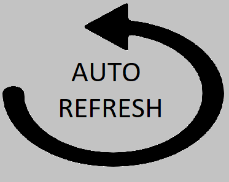

Extensao modelada para atualizar a primeira aba do navegador automaticamente.
O Intervalo padrão é 1 minuto.
Tempo:

Necessita implementar a função para anular o refresh quando o usuario inetragir com a aba.